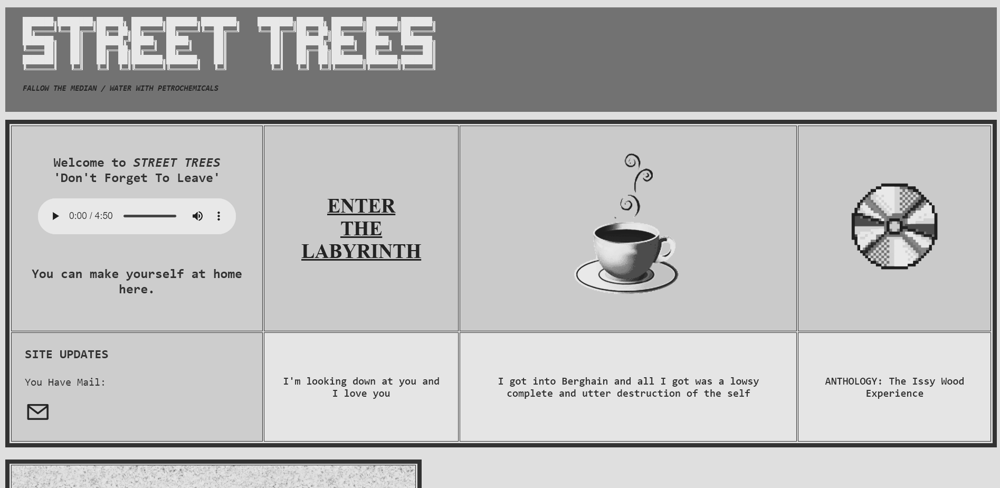

Yes, I'm starting 2023 with a clean slate, launching a newer yet older version of StreeTrees. I've wanted to
recreate Windows 95 for a long time, yet never had the patience (n)or time to fully implement my vision for
the site. Pulling up my old blog now feels like a cheap prototype, which has been a common theme in this
web-journey. I'm considering adding a few poems to the archive folder that I want to keep lugging around,
but otherwise I'm looking forward to a new START to StreeTrees.
I wanted to launch with a brief rememberance of what I've accomplished this year (in the virtual
realm) and a look ahead too. After all, what is more 90s than dreaming?
StreeTrees Version 1:
☆ The blog was launched on Github for the first time on April 21st 2022, I didn't even take a screenshot
on my computer at the time so all I have is a few screenshots from my phone showing the first version. This version
included a blog and writings pages, the original name of the blog "CYBER HUNTER" in large ascii letters, and
a few cyberpunk type gifs.
☆ About a week later V.1.1 was released, adding a more cohesive 90's coffee-house aesthetic. I changed to a calmer brown
background and added the first music to the site, Zero 7's Polaris. This was the start of adding story and
ambiance to the site itself, independent of my writing. This version also included a music page.
☆ On May 13th I released V.1.2 bringing this epic background and a more exciting entry page with bulletin
board elements to provide updates and nonsense. I actually don't hate this format and will probably
return to it if more people start to visit the site again. I think about 5-6 people were semi-regular viewers
at this point so we could perhaps consider this StreeTrees golden era, although the background did become overwhelming
I admit.
☆ V.1.3 was released around May 28th and kept largely the same bulletin board style but with less abrasive
colors and a bit more free format, I added a guest board and a few links to other pages with individual stories
/writings/videos. I also changed to the name Street Trees at this point and started the official streetrees domain.

☆ V.1.4 is lost to time but I remember it as a shittier version of V.1.5 without the tab links at the top of the
page. It was also during this time that I started adding a page before the landing page that would hold old art films. Remember
the australia one? Or the really long one about Berlin streetlights? V.1.5 was released July 12th and the site remained
virtually unchanged until this new V.2.1. This previous version included a cleaner landing page and cute
rounded boxes to put poems and songs. I also used 90s textbook covers to create the title visuals and DALLI to create
AI paintings that would fit this theme.
All of this is to say, I'm happy with the progress that I've made in coding over the last year. I know that I'll look
back at this version in another year and be amazed at how simplistic it is, but that's the fun of web design. Also,
the joy of having noone around. Still, it was very motivating to have people viewing StreeTrees regularly and I do
hope to be ready to take the site public (!) in the coming year. My hopes for V.2.1 are:
☆ More long-form writing that stands on its own or is part of larger projects. Individual pages dedicated to
stories in progress or finished chapters.
☆ Creating music to accompany elements of the site i.e. poetry with synth ambiance
☆ More focus on community elements like connection to forums and other blogs that I like, as parquet
courts always says it's all community!
If you are reading this, thank you. This blog has helped me to feel confident in my ability to create and
express myself - something that I've struggled to feel ownership of throughout my life. For someone who's
always wanted to be an artist/writer first, it's been slow going to find my place, and I've
been helped so much by the encouragement of readers like you, thank you.
 ACCOMPANYING FILES
ACCOMPANYING FILES
 BLOG
BLOG